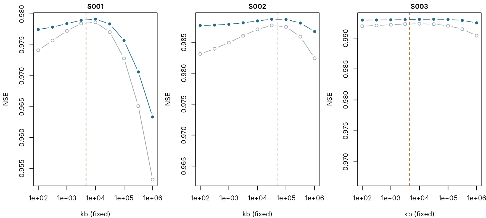
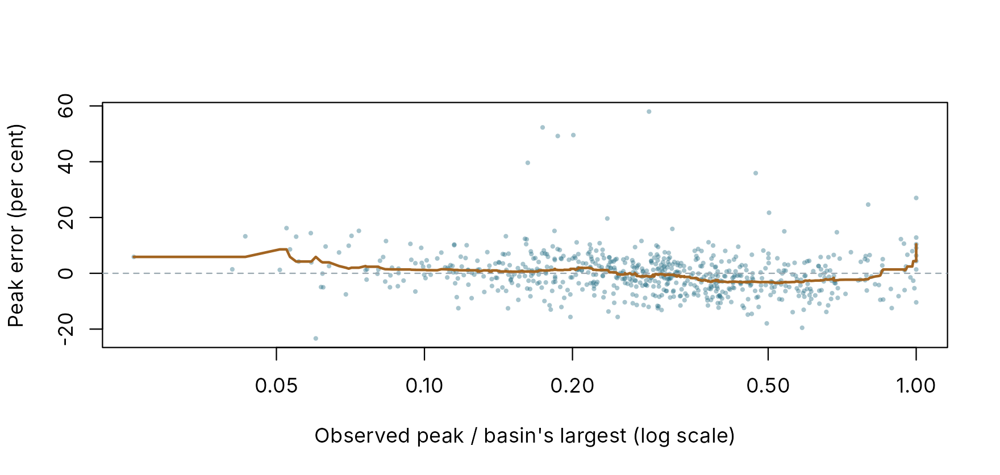

Many catchments: what automatic calibration recovers, and what limits it
pdmS7 documentation
Source:vignettes/large-sample.Rmd
large-sample.RmdLarge-sample hydrology studies a method over many catchments at once, so that a pattern is not mistaken for the quirk of one river. Its weakness is that the truth is never known: a calibration that scores well may still have the wrong parameters, and nothing in the record says so.
A large sample of synthetic catchments removes that weakness. Every catchment has its own climate and its own true model, every truth is written down, and the same automatic calibration a real study would use is run over all of them. This article does that for 30 catchments and asks three questions:
- How well does automatic calibration fit, on data it saw and data it did not?
- Which parameters does it recover, and which does it not?
- What decides whether a parameter can be recovered?
It then asks what limits automatic calibration, the search or the record, on the same sample, and finds and scores the floods of a whole batch. Calibrating many catchments is the practical runbook for running such a batch.
The sample
synthetic_basins() writes one folder per catchment, in
the layout calibrate_batch() reads. Each catchment draws
its own climate (how wet, how stormy, how much evaporation) and its own
true parameters, within the calibration bounds. Each record is ten years
of daily data, gauged with persistent error and an extrapolated rating
above its highest gauging.
basins <- file.path(tempdir(), "sample-basins")
output <- file.path(tempdir(), "sample-projects")
unlink(c(basins, output), recursive = TRUE)
sample <- synthetic_basins(basins, n = 30, years = 10, dt = 24, seed = 7)
round(sapply(sample[, c("area_km2", "rain_mm", "pet_mm", "cmax", "kg", "k1", "kb")],
range), 1)
#> area_km2 rain_mm pet_mm cmax kg k1 kb
#> [1,] 10.5 510.9 445.1 139.5 505.4 2.1 1100.4
#> [2,] 482.4 1245.1 653.9 598.9 4533.3 19.2 48444.9
par(mfrow = c(1, 2), mar = c(4, 4.2, 0.8, 0.8))
plot(sample$pet_mm, sample$rain_mm, pch = 16, col = pal[2], xlab = "PET (mm a year)",
ylab = "Rain (mm a year)")
plot(sample$cmax, sample$kg, log = "y", pch = 16, col = pal[3], xlab = "cmax (mm)",
ylab = "kg (hours, log scale)")
The sample’s climates and catchments. Left: annual rain against potential evaporation. Right: soil capacity against recharge time constant. Each point is one catchment.
The sample spans rain from 511 to 1245 mm a year, areas from 11 to 482 km2, and soil capacities from 139 to 599 mm. Climate and catchment are drawn independently, as they would not be in nature, so that their effects can be told apart.
Calibrating all of them
One call calibrates the whole sample: automatic calibration of all seven parameters at once from the standard preset, with four starts, in parallel workers. Each record’s two wettest years are held back and revealed at the end by the test, as every project does by default.
# R CMD check allows two processes; elsewhere use up to four cores. The results do not depend
# on the number: each basin's random starts are seeded from its name.
limited <- identical(toupper(Sys.getenv("_R_CHECK_LIMIT_CORES_")), "TRUE")
cores <- if (limited) 2L else min(4L, max(1L, parallel::detectCores() - 1L))
# Each basin's rain is biased by a known factor between 0.9 and 1.1, so the rainfall factor,
# locked by default, is searched.
unlock <- list(fc = c(0.6, 1.6))
elapsed <- system.time(
calibrate_batch(basins, output, starts = 4, control = list(maxit = 40), cores = cores,
overrides = unlock, test = TRUE)
)[["elapsed"]]
status <- batch_status(output)
table(status$state)
#>
#> done
#> 30
results <- batch_results(output)All 30 catchments finished, in 5 minutes on 3 cores. A sample of
hundreds takes the same call; calibrate_batch() resumes
where it stopped if interrupted. Calibrating many catchments covers
running it for real.
How well does it fit?
scores <- list(calibration = results$candidate_score, validation = results$validation_score,
`wettest years` = results$wettest_score)
plot(NA, xlim = range(unlist(scores), na.rm = TRUE), ylim = c(0, 1), xlab = "NSE",
ylab = "Share of catchments at or below")
for (i in seq_along(scores)) {
lines(stats::ecdf(scores[[i]]), col = pal[i + 1], lwd = 2, do.points = FALSE)
}
legend("topleft", names(scores), col = pal[2:4], lwd = 2, bty = "n")
The share of catchments reaching each score, on the calibration window, the validation window and the held-back wettest years.
round(sapply(scores, stats::quantile, c(0.1, 0.5, 0.9), na.rm = TRUE), 3)
#> calibration validation wettest years
#> 10% 0.979 0.978 0.976
#> 50% 0.992 0.990 0.982
#> 90% 0.995 0.995 0.991The median catchment scores 0.992 on calibration, 0.990 on validation and 0.982 on the held-back wettest years. By the usual standard every one of these is an excellent fit. The weakest on validation is S001, at 0.972. If scores were the whole story, this would be the end of the article.
Which parameters does it recover?
Every calibrated value can be set against its truth. The two surface stores of a cascade can swap without changing the flow, so they are compared as the faster and the slower of the pair.
fitted_config <- function(id) {
project <- file.path(output, id)
read_entry(project, read_projects(project)$candidate)$configuration
}
values <- function(cfg) {
k <- sort(c(cfg$surface$k1, cfg$surface$k2))
c(fc = cfg$fc, cmax = cfg$distribution$cmax, b = cfg$distribution$b,
kg = cfg$recharge$kg, k_fast = k[1], k_slow = k[2], kb = cfg$groundwater$kb)
}
truth <- t(vapply(sample$basin, function(id) {
values(read_pdm_config(file.path(basins, id, "truth.yml")))
}, numeric(7)))
fitted <- t(vapply(sample$basin, function(id) values(fitted_config(id)), numeric(7)))
# The typical error is the median, across catchments, of the size of the error as a factor:
# 0.1 means the fitted value is typically about 10 per cent off, either way.
typical <- apply(abs(log(fitted / truth)), 2, stats::median)
data.frame(parameter = names(typical), typical_error = round(exp(typical) - 1, 3),
within_10_percent = colSums(abs(log(fitted / truth)) < log(1.1)),
row.names = NULL)
#> parameter typical_error within_10_percent
#> 1 fc 0.009 30
#> 2 cmax 0.060 23
#> 3 b 0.100 15
#> 4 kg 0.031 30
#> 5 k_fast 0.112 12
#> 6 k_slow 0.075 19
#> 7 kb 0.393 4
logged <- c("kg", "k_fast", "k_slow", "kb")
par(mfrow = c(2, 4), mar = c(4, 4, 1.6, 0.6), cex.main = 1)
for (p in colnames(truth)) {
lim <- range(c(truth[, p], fitted[, p]))
plot(truth[, p], fitted[, p], log = if (p %in% logged) "xy" else "", xlim = lim, ylim = lim,
pch = 16, col = adjustcolor(pal[2], 0.7), xlab = "true", ylab = "calibrated", main = p)
abline(0, 1, col = pal[7], lty = 2, untf = TRUE)
}
Calibrated against true values, one point per catchment. Points on the line are exact. Log scales for the parameters that span orders of magnitude.
1 calibration (S017) ended with a parameter against a bound. That is worth checking in a real study: it can mean a search that went astray, or a true value close to the bound. Nothing in the batch flags it yet, so check for it as this article does.
The ranking is clear. fc and kg come back closest, typically within 1 and 3 per cent. kb and k_fast are the worst, typically 39 and 11 per cent out. Yet the calibrations that got them wrong still score an excellent NSE. A good score shows that the model reproduces the record; it does not show that the parameters are right.
Did the search find the best fit?
A parameter that comes back wrong has two possible causes. The search may have stopped short of the best fit, or the record may not be able to tell the true value from the wrong one. The truth settles which: score each catchment’s true parameters on the same calibration window, and set the calibration’s score against it.
true_score <- vapply(sample$basin, function(id) {
project <- file.path(output, id)
entries <- read_project(project)$entries
fit <- utils::tail(entries$id[entries$type == "auto_calibration"], 1)
cfg <- read_pdm_config(file.path(basins, id, "truth.yml"))
changes <- vapply(b$path, function(p) pdmS7:::.path_get(cfg, p), numeric(1))
suppressWarnings(preview_trial(project, fit, changes))$scores$nse
}, numeric(1))
calibrated_score <- results$candidate_score[match(sample$basin, results$project)]
gap <- calibrated_score - true_score
round(c(at_least_truth = sum(gap >= -1e-6), short_by_over_0.001 = sum(gap < -0.001),
largest_shortfall = max(0, -min(gap))), 4)
#> at_least_truth short_by_over_0.001 largest_shortfall
#> 29.0000 0.0000 0.0004In 29 of the 30 catchments the calibration scores at least as well as the true parameters, and in the other it falls short by no more than 0.0004 in NSE. The search found the best fit each record allows. So when kb comes back 39 per cent out, the search is not to blame: parameter sets that far apart fit the record equally well, and the record, with its gauge error, cannot choose between them. More model runs, or a different search, would not recover it.
Why can the record not see kb? Water reaches the
groundwater store as recharge, which is already slow; a groundwater
store faster than its recharge passes it on almost unchanged, so across
a hundredfold range of kb the flow hardly changes. The
parameter matters only when recharge stops, in a drought long enough to
empty the soil, and there equally good calibrations can disagree widely.
What
limits automatic calibration shows this with profiles and drought
scenarios, and compares four searches on this sample.
What decides whether a parameter can be recovered?
A parameter can be recovered only if the record exercises it. A natural guess is that the soil capacity is pinned best where the climate works the soil hardest: in a dry climate the soil fills and empties far enough for its size to show, while in a wet one many capacities fit the record equally well. A simple measure of how hard the climate works the soil is its dryness, potential evaporation over rain. The sample can test the guess.
dryness <- sample$pet_mm / sample$rain_mm
cmax_error <- abs(log(fitted[, "cmax"] / truth[, "cmax"]))
plot(dryness, cmax_error, pch = 16, col = pal[3], xlab = "Dryness (PET / rain)",
ylab = "cmax error (|log ratio|)")
The error in each catchment’s calibrated soil capacity against the dryness of its climate.
Across this sample, dryness alone does not explain how well the soil capacity is recovered (Spearman correlation 0.11): other things, such as how the parameters trade off against each other, matter as much. A real large-sample study can ask the same question of its own results, but cannot see the error itself; here it can.
The largest floods
The test also revealed each record’s two wettest years. Their peaks are above the highest gauging, where the rating records them low, so the recorded peak is not the truth. Here the true peak is known.
peak_rows <- lapply(sample$basin, function(id) {
project <- file.path(output, id)
entries <- read_project(project)$entries
test <- read_entry(project, utils::tail(entries$id[entries$type == "test"], 1))
forcing <- data.table::fread(file.path(basins, id, "forcing.csv"))
forcing$time <- as.POSIXct(forcing$time, format = "%Y-%m-%dT%H:%M:%SZ", tz = "UTC")
true_flow <- synthetic_catchment(forcing, read_pdm_config(file.path(basins, id, "truth.yml")),
error = list(sd = 0, memory_h = 72))$true_flow
reg <- read_entry(project, entries$id[entries$type == "data_registered"][1])
do.call(rbind, lapply(seq_along(test$wettest$years), function(i) {
y <- test$wettest$years[[i]]
span <- reg$scorecard$wettest$years[[i]]
data.frame(basin = id, recorded = y$observed_peak_m3s, calibrated = y$simulated_peak_m3s,
true = max(true_flow[span$first_row:span$last_row]),
low = y$spread_low_m3s, high = y$spread_high_m3s)
}))
})
peaks <- do.call(rbind, peak_rows)
vs_recorded <- peaks$calibrated / peaks$recorded - 1
vs_true <- peaks$calibrated / peaks$true - 1
round(c(median_error_vs_recorded = stats::median(vs_recorded),
median_error_vs_true = stats::median(vs_true),
median_spread = stats::median((peaks$high - peaks$low) / peaks$true),
share_true_inside_spread = mean(peaks$true >= peaks$low & peaks$true <= peaks$high)), 3)
#> median_error_vs_recorded median_error_vs_true median_spread
#> 0.099 -0.011 0.148
#> share_true_inside_spread
#> 0.883
boxplot(list(`against recorded peak` = 100 * vs_recorded, `against true peak` = 100 * vs_true),
horizontal = TRUE, col = adjustcolor(pal[2:3], 0.4), xlab = "Peak error (per cent)",
las = 1, cex.axis = 0.85)
abline(v = 0, lty = 2, col = pal[7])
Peak error in the held-back wettest years, judged against the recorded peak (which the rating understates) and against the true peak.
Judged against the recorded peaks, the calibrated models look 10 per cent high in the median year. Judged against the true peaks, they are 1 per cent low. Across the 60 held-back years, the range of the equally good fits contains the true peak in 88 per cent of them. Larger floods explains these checks for one catchment; across a sample, they show how far a method can be trusted with floods it has not seen.
What the sample shows
- Scores are not evidence of correct parameters. Every catchment scored an NSE of at least 0.97 on validation. Some parameters were still recovered poorly, and only the known truth shows it.
- The search is not the limit. In 29 of 30 catchments the calibration fitted at least as well as the truth. What the record cannot recover, no search will.
- Some parameters are reliably recovered and some are not. Here fc and kg were within 10 per cent in all 30 catchments; kb was within 10 per cent in only 4 of them. A study that reads meaning into a parameter should first know which kind it is.
- A rating extrapolated above the highest gauging makes a good model look bad on the biggest floods. Judge peak errors with the rating flag in mind.
- Simple explanations need testing. The guess that dry climates pin the soil store better was not borne out here; a large sample is where such guesses are tested.
- Large samples answer questions single catchments cannot: which parameters to trust, under which climates, and how much a calibration method can be relied on beyond its record.
For a real study, replace synthetic_basins() with real
basin folders and keep everything else. Running a synthetic sample
alongside, made to resemble the real catchments with
fit_rain() and sensible ranges, shows how far the method
can be trusted before the real results are read.
What limits automatic calibration
When a calibrated parameter comes back wrong, either the search stopped short of the best fit or the record cannot tell the right value from the wrong one. The two call for opposite remedies: a better search in the first case, and in the second, more information or a fixed value. On real data they cannot be told apart, because the best possible fit is unknown.
On synthetic catchments they can. Each catchment’s true parameters
are known, so they can be scored on the same record as the calibration.
A calibration that scores at least as well as the truth has found the
best fit the record allows, and any parameter it still gets wrong is
beyond the record’s reach. This article applies that test to the sample
of 30 catchments in A large sample and
follows where it leads: to a fault in staged calibration, now fixed; to
one parameter, kb, that no search can recover; and to the
one kind of event in which that parameter matters.
The question
A large sample found most parameters
recovered closely and one, kb, the groundwater store’s
constant, recovered poorly. The obvious suspect was the search.
calibrate_pdm() uses L-BFGS-B, which follows the slope of
the objective, estimated by nudging each parameter in turn. A model with
thresholds and stores that switch on and off can have a rough objective
that misleads such a search, and hydrology has long preferred global
methods for that reason. One of them, dynamically dimensioned search
(DDS; Tolson and Shoemaker, 2007), is built for watershed models and now
available as method = "dds".
Four searches, one sample
Each search was run as one calibrate_batch() over the
same 30 catchments, ten years of daily data each, and every result was
set against its truth. Each catchment’s rain is biased by a known
factor, so every search included the rainfall factor fc,
which a batch now holds at 1 unless an override unlocks it.
| Search | What it does |
|---|---|
| staged, confined polish | Water balance and slow stores, then fast stores, then a polish of everything kept within a quarter of each range around stage 2’s values (before version 0.8.0) |
| staged | The same, with the polish free to search the full bounds (now the default) |
| all at once | All seven parameters in one search, from four starts |
| staged, DDS | The staged search with DDS, given the same number of model runs as the first |
The four batches take too long to repeat when this page is built, so
their results are stored with the package. The minutes are for four
cores, except the confined polish, which the benchmark has to run on
one. inst/benchmarks/search_methods.R reruns them; each
basin’s searches are seeded, so a rerun gives the same numbers.
study <- utils::read.csv(system.file("extdata", "search_study.csv", package = "pdmS7"))
searches <- c("staged, confined polish", "staged", "all at once", "staged, DDS")
gap <- study$nse - study$true_nse
summary_table <- do.call(rbind, lapply(searches, function(s) {
k <- study$search == s
data.frame(search = s, model_runs = stats::median(study$model_runs[k]),
minutes = study$batch_minutes[k][1], at_least_truth = sum(gap[k] >= -1e-6),
short_by_over_0.001 = sum(gap[k] < -0.001), largest_shortfall = max(0, -min(gap[k])))
}))
summary_table$largest_shortfall <- round(summary_table$largest_shortfall, 4)
summary_table
#> search model_runs minutes at_least_truth short_by_over_0.001
#> 1 staged, confined polish 3323.5 15.30 26 2
#> 2 staged 3431.0 4.37 27 0
#> 3 all at once 2985.0 3.41 29 0
#> 4 staged, DDS 3384.0 5.35 2 19
#> largest_shortfall
#> 1 0.0914
#> 2 0.0003
#> 3 0.0004
#> 4 0.0155The search was not the problem. Calibrating everything at once with L-BFGS-B scored at least as well as the truth in 29 of 30 catchments and was never short by more than 0.0004 in NSE, in 3.4 minutes on four cores. DDS, with the same budget as the staged search, fell short by more than 0.001 in 19 catchments. DDS is designed for budgets of thousands of runs per search; here it had about 564 for each of its six searches per catchment, and on a smooth objective such as NSE the slope-following search makes better use of them.
Where the staged search went wrong
The confined polish failed twice, in S021 and S027.
# The same 30 catchments as above.
sample_path <- basins
trapped <- study[study$search == "staged, confined polish" & study$basin %in% failed,
c("basin", "nse", "true_nse")]
cbind(trapped, sample[match(trapped$basin, sample$basin), c("k1", "k2")])
#> basin nse true_nse k1 k2
#> 21 S021 0.9797780 0.9872466 15.71910 31.24696
#> 27 S027 0.9036003 0.9949747 19.17412 28.12038Both have slow surface stores, between 16 and 31 hours against a sample median of 7 for the first store. Stage 1 fits the water balance and the slow stores with the surface stores held at their starting values, 2 and 4 hours. Where the true surface stores are much slower, stage 1 can make up for them with the wrong slow stores, and a polish kept near that point cannot leave it. Whether it happens depends on where stage 1 lands, which is why it struck 2 catchments in 30 and not every one with slow surface stores. With the polish over the full bounds, the staged search fell short of the truth by more than 0.001 in none of them. Since version 0.8.0 that is the default.
What the record cannot tell: kb
With the search cleared, the parameters it gets wrong tell what the record cannot. Here is each search’s typical error by parameter: the median, across catchments, of how far the calibrated value is from the truth, as a fraction. The surface stores are compared as the faster and slower of the pair, since they can swap without changing the flow.
truth <- sample[, c("basin", "fc", "cmax", "b", "kg", "k1", "k2", "kb")]
ordered <- function(d) {
k <- cbind(d$k1, d$k2)
d$k_fast <- pmin(k[, 1], k[, 2])
d$k_slow <- pmax(k[, 1], k[, 2])
d
}
truth <- ordered(truth)
params <- c("fc", "cmax", "b", "kg", "k_fast", "k_slow", "kb")
recovery <- t(vapply(searches, function(s) {
fit <- ordered(study[study$search == s, ])
tr <- truth[match(fit$basin, truth$basin), ]
vapply(params, function(p) exp(stats::median(abs(log(fit[[p]] / tr[[p]])))) - 1, numeric(1))
}, numeric(length(params))))
round(recovery, 2)
#> fc cmax b kg k_fast k_slow kb
#> staged, confined polish 0.01 0.06 0.10 0.03 0.11 0.08 0.45
#> staged 0.01 0.06 0.09 0.03 0.15 0.10 0.47
#> all at once 0.01 0.06 0.10 0.03 0.11 0.08 0.39
#> staged, DDS 0.03 0.20 0.43 0.10 0.34 0.24 2.81Every search, good or bad, leaves kb the worst
recovered. A search that reaches the truth’s score and still misses a
parameter by that much is meeting a flat objective. The direct test is a
profile: fix kb at a range of values, recalibrate
everything else at each one, and record the best score. If the profile
is flat, the record does not constrain kb. Holding the
other parameters at their true values as well shows how much of the
flatness is kb barely mattering, and how much is the others
making up for it.
others <- c("fc", "distribution.cmax", "distribution.b", "recharge.kg", "surface.k1",
"surface.k2")
kb_grid <- 10^seq(2, 6, by = 0.5)
basin_data <- function(id) {
dir <- file.path(sample_path, id)
forcing <- as.data.frame(data.table::fread(file.path(dir, "forcing.csv")))
forcing$time <- as.POSIXct(forcing$time, format = "%Y-%m-%dT%H:%M:%SZ", tz = "UTC")
meta <- yaml::read_yaml(file.path(dir, "basin.yml"))
day <- format(forcing$time, "%Y-%m-%d")
list(forcing = forcing, observed = data.table::fread(file.path(dir, "flow.csv"))$q_m3s,
truth = read_pdm_config(file.path(dir, "truth.yml")),
first = match(meta$calibration[[1]], day), last = match(meta$calibration[[2]], day))
}
simulate <- function(cfg, forcing, start_flow) {
model <- pdm_from_config(cfg)
state <- suppressWarnings(initial_state_from_flow(model, start_flow, baseflow_fraction = 0.7))
run_pdm(model, forcing[c("rain", "pet")], state)$output$q_m3s
}
nse_on <- function(sim, obs) 1 - sum((sim - obs)^2) / sum((obs - mean(obs))^2)
profile_basin <- function(id) {
d <- basin_data(id)
rows <- d$first:d$last
cal <- d$forcing[seq_len(d$last), ]
obs <- d$observed[seq_len(d$last)]
b <- calibration_bounds(d$truth, overrides = list(fc = c(0.6, 1.6)))
b <- b[b$path %in% others, ]
fits <- lapply(kb_grid, function(kb) {
cfg <- d$truth
cfg$groundwater$kb <- kb
held <- nse_on(simulate(cfg, cal, obs[1])[rows], obs[rows])
fit <- suppressWarnings(calibrate_pdm(
cfg, cal[c("rain", "pet")], obs, stats::setNames(b$lower, b$path),
stats::setNames(b$upper, b$path), warmup = d$first - 1, objective = "nse",
control = list(maxit = 60), starts = 2, seed = 1, log_scale = b$path[b$scale == "log"]
))
list(held = held, refit = 1 - fit$objective, config = fit$config)
})
list(id = id, data = d, fits = fits,
table = data.frame(basin = id, kb = kb_grid,
others_at_truth = vapply(fits, function(f) f$held, numeric(1)),
others_recalibrated = vapply(fits, function(f) f$refit, numeric(1))))
}
profiles <- lapply(c("S001", "S002", "S003"), profile_basin)
# The same span of NSE in every panel, so that a flat profile looks flat everywhere.
span <- max(vapply(profiles, function(p) {
diff(range(c(p$table$others_at_truth, p$table$others_recalibrated)))
}, numeric(1)))
par(mfrow = c(1, 3), mar = c(4, 4.2, 1.6, 0.6), cex.main = 1)
for (p in profiles) {
t <- p$table
top <- max(c(t$others_at_truth, t$others_recalibrated))
plot(t$kb, t$others_recalibrated, log = "x", type = "b", pch = 16, col = pal[2],
ylim = c(top - span, top), xlab = "kb (fixed)", ylab = "NSE", main = p$id)
lines(t$kb, t$others_at_truth, type = "b", pch = 1, col = pal[7])
abline(v = p$data$truth$groundwater$kb, lty = 2, col = pal[3])
}
Best calibration NSE with kb fixed, one panel per catchment, each axis spanning the same range of NSE. Grey: every other parameter at its true value. Blue: every other parameter recalibrated. The dashed line marks the true kb.
mid <- kb_grid >= 100 & kb_grid <= 1e4
flatness <- do.call(rbind, lapply(profiles, function(p) {
t <- p$table
data.frame(basin = p$id, true_kb = p$data$truth$groundwater$kb,
range_others_at_truth = diff(range(t$others_at_truth[mid])),
range_others_recalibrated = diff(range(t$others_recalibrated[mid])),
drop_at_1e6 = max(t$others_recalibrated) - t$others_recalibrated[length(kb_grid)])
}))
flatness[-1] <- round(flatness[-1], 4)
flatness
#> basin true_kb range_others_at_truth range_others_recalibrated drop_at_1e6
#> 1 S001 4693.552 0.0045 0.0017 0.0158
#> 2 S002 48444.917 0.0040 0.0007 0.0020
#> 3 S003 4534.910 0.0004 0.0001 0.0006Across a hundredfold range of kb, from 100 to 10,000,
the best NSE moves by no more than 0.0017 with the other parameters
recalibrated, and by no more than 0.0045 with them held at the truth.
The second number is the telling one: even with nothing making up for
it, changing kb a hundredfold barely changes the flow. The
record does not constrain kb because, over that range,
kb hardly affects the flow. Only very slow values cost
more: at 1,000,000 the best NSE drops by up to 0.016. This is
equifinality in its plainest form: many values of a parameter fit the
record equally well.
The reason lies in how water reaches the groundwater store. It
arrives as recharge, which drains from the soil with time constant
kg, typically thousands of hours in this sample. That
recharge is already slow and smooth. A groundwater store that responds
faster than it passes the recharge on almost unchanged, so the flow
shows the slower of the two stores in series, kg, and hides
the faster, kb. That is why kg is recovered
within a few per cent and kb is not.
Where kb matters: drought
A parameter the record cannot see may still matter for events the
record does not contain. kb sets how fast the groundwater
store drains on its own, which it does only when recharge stops, and
recharge stops only when the soil is dry. So the equally good fits from
the profiles, with kb at about 300, 3,000 and 30,000, are
run through two droughts, each starting on 1 April 2018 in the
validation period:
- A dry summer: six months at 30 per cent of the recorded rain.
- A long drought: twelve months with no rain at all.
# The fits with kb at about 300, 3,000 and 30,000.
kb_sets <- vapply(c(2.5, 3.5, 4.5), function(x) which.min(abs(log10(kb_grid) - x)), integer(1))
scenario <- function(forcing, months, share) {
out <- forcing
begin <- as.POSIXct("2018-04-01", tz = "UTC")
end <- seq(begin, by = paste(months, "months"), length.out = 2)[2]
window <- out$time >= begin & out$time < end
out$rain[window] <- share * out$rain[window]
list(forcing = out, window = window)
}
drought <- do.call(rbind, lapply(profiles, function(p) {
d <- p$data
cases <- list(`dry summer` = scenario(d$forcing, 6, 0.3),
`long drought` = scenario(d$forcing, 12, 0))
do.call(rbind, lapply(names(cases), function(name) {
s <- cases[[name]]
true_low <- min(simulate(d$truth, s$forcing, d$observed[1])[s$window])
usual_low <- min(simulate(d$truth, d$forcing, d$observed[1])[s$window])
ratios <- vapply(kb_sets, function(i) {
min(simulate(p$fits[[i]]$config, s$forcing, d$observed[1])[s$window]) / true_low
}, numeric(1))
usual <- vapply(kb_sets, function(i) {
min(simulate(p$fits[[i]]$config, d$forcing, d$observed[1])[s$window]) / usual_low
}, numeric(1))
soil <- {
model <- pdm_from_config(d$truth)
state <- suppressWarnings(initial_state_from_flow(model, d$observed[1],
baseflow_fraction = 0.7))
run_pdm(model, s$forcing[c("rain", "pet")], state)$output$soil_mm
}
fit_scores <- vapply(kb_sets, function(i) p$fits[[i]]$refit, numeric(1))
data.frame(
basin = p$id, scenario = name, true_soil_at_end_mm = soil[max(which(s$window))],
nse_spread = diff(range(fit_scores)),
low_flow_vs_truth_min = min(ratios), low_flow_vs_truth_max = max(ratios),
same_window_no_drought_min = min(usual), same_window_no_drought_max = max(usual)
)
}))
}))
drought[-(1:2)] <- round(drought[-(1:2)], 3)
drought
#> basin scenario true_soil_at_end_mm nse_spread low_flow_vs_truth_min
#> 1 S001 dry summer 28.936 0.001 0.968
#> 2 S001 long drought 0.008 0.001 0.504
#> 3 S002 dry summer 28.115 0.001 0.963
#> 4 S002 long drought 0.057 0.001 0.353
#> 5 S003 dry summer 72.709 0.000 0.970
#> 6 S003 long drought 4.108 0.000 0.811
#> low_flow_vs_truth_max same_window_no_drought_min same_window_no_drought_max
#> 1 1.021 0.992 1.010
#> 2 1.840 0.992 1.010
#> 3 1.002 0.985 1.004
#> 4 0.867 0.985 1.004
#> 5 0.985 0.990 0.993
#> 6 0.972 0.990 0.993The three parameter sets of each catchment fit the record to within
0.0010 in NSE. Without any drought, their lowest flows in the same
months lie between 0.98 and 1.01 times the truth’s. Through the dry
summer, the soil keeps water, recharge continues, and the band is much
the same: 0.96 to 1.02, with at least 28 mm still in the true soil store
at the end. Through the long drought, the soil empties (to 4.1 mm or
less), recharge stops, the groundwater store drains at the rate
kb sets, and the band opens to 0.35 to 1.84 times the true
lowest flow.
So kb is harmless within the record and decisive beyond
it. Equally good calibrations agree on the floods and droughts they were
fitted to, and can disagree by a factor of up to 3.7 in the lowest flow
of a drought severe enough to stop recharge. It is the low-flow
counterpart of the extrapolated rating at the top end (Larger floods): a model can be trusted
only as far as its record exercised it.
Which groundwater store?
kb cannot be identified within one store. A related
question is whether the record can choose the store itself: linear,
quadratic, cubic or exponential. Recession analysis
suggests it might, from data alone. Once the surface stores have
drained, the rate at which flow falls against the flow itself, on log
axes, has a slope of 1, 1.5, 1.67 or 2 for the four stores.
The test used sixteen made-up catchments: each store, under standard
recharge (the soil store drains to groundwater all the time) and split
recharge (groundwater fills only when runoff does), on two ten-year
hourly rain records with 3% gauge noise. Each catchment was calibrated
with all four stores on seven years and scored on the last three. Four
ways of choosing were compared: the slope read straight off the record,
the best validation NSE, the best validation log NSE, and the fitted
store whose simulated recession slope comes closest to the record’s. The
script is inst/benchmarks/recession_stores.R.
stores <- read.csv(system.file("extdata", "recession_stores.csv", package = "pdmS7"))
theory <- c(linear = 1, quadratic = 1.5, cubic = 5 / 3, exponential = 2)
cases <- split(stores, list(stores$truth, stores$recharge, stores$seed), drop = TRUE)
chosen <- do.call(rbind, lapply(cases, function(x) {
ranked <- order(-x$val_log_nse)
data.frame(
recharge = x$recharge[1], truth = x$truth[1],
slope_read = names(theory)[which.min(abs(theory - x$observed_slope[1]))],
best_nse = x$candidate[which.max(x$val_nse)],
best_log_nse = x$candidate[ranked[1]],
closest_simulated_slope = x$candidate[which.min(abs(x$simulated_slope -
x$observed_slope))],
log_nse_margin = x$val_log_nse[ranked[1]] - x$val_log_nse[ranked[2]]
)
}))
right <- function(rule) tapply(chosen[[rule]] == chosen$truth, chosen$recharge, sum)
rules <- c("slope_read", "best_nse", "best_log_nse", "closest_simulated_slope")
correct <- t(vapply(rules, right, c(split = 0, standard = 0)))
cbind(correct, all = rowSums(correct))
#> split standard all
#> slope_read 6 2 8
#> best_nse 8 8 16
#> best_log_nse 8 8 16
#> closest_simulated_slope 6 3 9
margins <- chosen$log_nse_marginThe validation scores found the true store in every catchment. Neither recession rule did as well:
- The slope read off the record worked under split recharge but not standard. Recharge that continues through a recession slows its fall, and the slopes came out 0.1 to 0.9 low, so nearly every store looked linear. Even with split recharge, the exponential store’s slope (about 1.8) sat nearer the cubic’s 1.67 than its own 2.
- Matching the simulated recession slope did little better. Each fitted store bends its parameters until its recessions look roughly right, so the slopes no longer separate them.
The validation scores won, but only just. The best store’s log NSE beat the next by a median of 0.0033, at most 0.024, and in 15 of 16 catchments by less than 0.02, the tolerance within which a calibration project counts two scores as equally good. These records came from the model being fitted, with small, simple noise. Real records add rain errors and a structure that is never exactly right, and margins of a few thousandths would not survive them.
So the record can choose the groundwater store only in principle. In practice, compare the stores, report the ones within the tolerance of the best as equally good, and keep the standard cubic store unless one is clearly better. Use the recession plot as a check that a fitted model’s low flows fall at the right rate, not as a way to choose its store.
Which recharge rule?
The same test for recharge used nine made-up catchments: standard
recharge (the soil store drains to groundwater all the time), split
recharge (a share of each event’s runoff goes to groundwater) and demand
recharge (groundwater draws fastest when it is emptiest), each on three
ten-year hourly rain records with the cubic store and 3% gauge noise.
Each was calibrated with all three rules. The script is
inst/benchmarks/recharge_rules.R.
rules <- read.csv(system.file("extdata", "recharge_rules.csv", package = "pdmS7"))
cases <- split(rules, list(rules$truth, rules$seed), drop = TRUE)
picked <- do.call(rbind, lapply(cases, function(x) {
by_log <- order(-x$val_log_nse)
by_nse <- order(-x$val_nse)
data.frame(truth = x$truth[1], best_log_nse = x$candidate[by_log[1]],
log_nse_margin = x$val_log_nse[by_log[1]] - x$val_log_nse[by_log[2]],
best_nse = x$candidate[by_nse[1]],
nse_margin = x$val_nse[by_nse[1]] - x$val_nse[by_nse[2]],
rise_follows_quick_flow = x$observed_rise_cor[1])
}))
rownames(picked) <- NULL
picked[order(picked$truth), ]
#> truth best_log_nse log_nse_margin best_nse nse_margin
#> 1 demand demand 0.15582733 demand 0.01190657
#> 4 demand demand 0.21134406 demand 0.02287367
#> 7 demand demand 0.18789850 demand 0.01524153
#> 2 split split 0.24570012 split 0.01455068
#> 5 split split 0.24323174 split 0.01554466
#> 8 split split 0.20302903 split 0.01074521
#> 3 standard standard 0.07661034 standard 0.00980218
#> 6 standard standard 0.22537891 standard 0.04487296
#> 9 standard standard 0.12120537 standard 0.01985162
#> rise_follows_quick_flow
#> 1 0.02302057
#> 4 -0.06304701
#> 7 0.02249461
#> 2 0.14225911
#> 5 0.08354189
#> 8 0.08963414
#> 3 0.04190775
#> 6 -0.04634035
#> 9 0.01245923Here the record speaks clearly. The validation scores picked the true rule in all 9 catchments, and by margins in log NSE of 0.08 to 0.25, against a median of 0.0033 for the groundwater store. A wrong recharge rule cannot be hidden by the other parameters: it changes when groundwater fills, and so the shape of every recession and the level of every low flow. Margins this size should survive the errors of real data, though only a test on gauged catchments can show it.
One diagnostic needs no model. Across each event, the rise of the
baseflow line that find_events()
draws can be set against the event’s quick flow. Split recharge feeds
groundwater in proportion to each event’s runoff, so the two move
together: their correlation was 0.08 to 0.14 under split recharge, and
-0.06 to 0.04 under the other two. It separates split recharge from the
rest, but not standard from demand.
What the study shows
- Check the search against the truth before blaming it. Scoring the true parameters separates a weak search from a weak record. Here the search was sound.
- Calibrate all at once, or in stages with a free polish. Both reach the best fit the record allows. A polish confined near stage 2 can lock in a wrong first stage; it is no longer the default.
- Use DDS for rough objectives, not smooth ones. At equal budget it lost to L-BFGS-B on NSE. It suits threshold objectives and large budgets.
-
Do not report
kbas calibrated. The record cannot identify it. Fix it from regional knowledge and leave it out of the search (exclude = "groundwater.kb"incalibrate_batch()andpdm_stages()), or calibrate it and report the range of equally good values instead of one number. - Do not expect the record to choose the groundwater store. Validation scores picked the true store in every synthetic catchment, by margins too small to survive real data. The recession slope reads the store only where recharge stops between events.
- Do test the recharge rule. It was identified in every synthetic catchment, by margins of 0.08 or more in log NSE, and whether baseflow rises with each event’s quick flow points to split recharge before any calibration.
- Before trusting a model in a severe drought, run the drought. Pass a drought scenario through the spread of equally good fits. If the spread is wide, the record cannot answer the question, however good the calibration scores.
The study has limits. The catchments are synthetic, their structure is exactly the model’s, the gauge error is simple and the data are daily. On real data, structural error adds its own equifinality, and the truth is not available to settle it. What carries over is the method: know which parameters the record can see, and test a model where the record did not reach.
For a comparison with machine-learning models, the lesson is the same as for any model: compare the flows, not the parameters, and compare them where the question lies. A score on the record says little about a drought the record does not contain.
Events across a sample
find_events() finds the events of a record objectively,
by the method of Giani and others (2022), and
event_scores() scores a model on each (Getting the floods right
explains the method). batch_events() does both for every
basin of a batch. Here is a batch of eight synthetic catchments with two
years of hourly data each, calibrated automatically.
ev_basins <- file.path(tempdir(), "event-basins")
ev_output <- file.path(tempdir(), "event-projects")
unlink(c(ev_basins, ev_output), recursive = TRUE)
ev_sample <- synthetic_basins(ev_basins, n = 8, years = 2, dt = 1, seed = 21)
limited <- identical(toupper(Sys.getenv("_R_CHECK_LIMIT_CORES_")), "TRUE")
cores <- if (limited) 2L else min(4L, max(1L, parallel::detectCores() - 1L))
# The made-up basins' rain is biased by a known factor, so the rainfall factor is searched.
ev_status <- calibrate_batch(ev_basins, ev_output, starts = 2, control = list(maxit = 30),
overrides = list(fc = c(0.6, 1.6)), cores = cores)
seconds <- system.time(found <- batch_events(ev_output))[["elapsed"]]
found$basins[, c("basin", "response_observed_h", "response_simulated_h", "events",
"median_abs_peak_error", "median_abs_timing_error_h")]
#> basin response_observed_h response_simulated_h events median_abs_peak_error
#> 1 S001 11 11 39 0.03468985
#> 2 S002 3 3 96 0.04525896
#> 3 S003 4 4 106 0.05047155
#> 4 S004 2 2 145 0.03652808
#> 5 S005 9 9 17 0.04304073
#> 6 S006 16 16 16 0.04560727
#> 7 S007 2 2 116 0.03731404
#> 8 S008 3 3 134 0.04051331
#> median_abs_timing_error_h
#> 1 2.0
#> 2 0.5
#> 3 1.0
#> 4 0.0
#> 5 3.0
#> 6 8.0
#> 7 0.0
#> 8 0.0Finding and scoring 669 events across 8 basins took 1.7 seconds. In every basin the response time of the calibrated model matches the response time of the record: the models respond as fast as the catchments do.
Each event is labelled with the window that holds its observed peak,
so performance on the calibration and validation windows can be told
apart. Events in the warm-up before calibration (outside)
are scored too, but a model is still settling there.
by_period <- aggregate(cbind(abs_peak_error = abs(peak_error),
abs_timing_error_h = abs(timing_error_h),
abs_volume_error = abs(volume_error)) ~ period, e,
stats::median)
by_period[-1] <- round(by_period[-1], 3)
by_period
#> period abs_peak_error abs_timing_error_h abs_volume_error
#> 1 calibration 0.043 0 0.031
#> 2 outside 0.059 0 0.048
#> 3 validation 0.035 0 0.030The largest events matter most for flood forecasting, and they are the ones a whole-record score is least able to describe. Here the largest tenth of each basin’s events, by observed peak, are set against the rest.
e$relative_peak <- e$observed_peak / ave(e$observed_peak, e$basin, FUN = max)
e$largest <- ave(e$observed_peak, e$basin, FUN = function(x) x >= stats::quantile(x, 0.9))
plot(e$relative_peak, 100 * e$peak_error, pch = 16, cex = 0.5, col = adjustcolor(pal[2], 0.4),
log = "x", xlab = "Observed peak / basin's largest (log scale)",
ylab = "Peak error (per cent)")
abline(h = 0, lty = 2, col = pal[7])
o <- order(e$relative_peak)
lines(e$relative_peak[o], 100 * stats::runmed(e$peak_error[o], 101), col = pal[3], lwd = 2)
Peak error of each event, by observed peak relative to the basin’s largest. Each point is one event; the line is a running median.
size <- aggregate(cbind(peak_error = peak_error, timing_error_h = timing_error_h) ~ largest,
e, stats::median)
size
#> largest peak_error timing_error_h
#> 1 0 -0.004931194 0
#> 2 1 0.004543903 0On the largest tenth of events the median peak is 0 per cent high, against 0 per cent low on the rest. A batch can then list the events that need a look, the worst large ones first, without anyone searching the records by hand:
worst <- e[e$largest == 1, ]
columns <- c("basin", "period", "flow_start_time", "observed_peak", "simulated_peak",
"peak_error", "timing_error_h")
worst <- worst[order(-abs(worst$peak_error)), columns]
head(worst, 5)
#> basin period flow_start_time observed_peak simulated_peak
#> 650 S008 validation 2012-05-03 12:00:00 86.24130 109.53914
#> 590 S008 calibration 2011-06-12 02:00:00 68.87607 85.84646
#> 365 S004 validation 2012-05-31 05:00:00 26.22356 30.08315
#> 316 S004 calibration 2011-11-17 20:00:00 21.32435 18.35477
#> 358 S004 validation 2012-04-27 13:00:00 38.02308 42.89603
#> peak_error timing_error_h
#> 650 0.2701471 0
#> 590 0.2463903 1
#> 365 0.1471802 0
#> 316 -0.1392579 0
#> 358 0.1281577 0Of these five, 5 peaked above the basin’s highest gauged flow, where the synthetic rating records flow low, and in 4 of them the model runs above the recorded peak. A large event that looks badly simulated may be a badly recorded one; Larger floods explains how to tell.
Speed
Estimating the response time is the costly part: the correlation is
computed for every window up to the longest response searched, by
default 150 hours. The search runs in the compiled core;
options(pdmS7.engine = "r") runs the R reference instead.
Here both are timed on ten years of 15-minute data.
quarter <- synthetic_catchment(synthetic_rain("2010-10-01", years = 10, dt = 0.25, seed = 4),
seed = 4)
rain <- quarter$forcing$rain
flow <- quarter$observed
compiled <- system.time(fast <- response_time_dmca(rain, flow, dt = 0.25))[["elapsed"]]
op <- options(pdmS7.engine = "r")
reference <- system.time(slow <- response_time_dmca(rain, flow, dt = 0.25))[["elapsed"]]
options(op)
all_events <- system.time(quarter_events <- find_events(rain, flow, dt = 0.25))[["elapsed"]]
c(steps = length(rain), windows = nrow(fast$curve), compiled_s = round(compiled, 2),
r_s = round(reference, 1), same_answer = fast$response_h == slow$response_h,
find_events_s = round(all_events, 2), events = nrow(quarter_events))
#> steps windows compiled_s r_s same_answer
#> 350400.00 600.00 1.19 18.80 1.00
#> find_events_s events
#> 1.26 520.00The compiled search took 1.19 seconds against 18.8 in R, with the same answer, and finding all 520 events took 1.26 seconds in all. A batch of hundreds of basins at 15 minutes is a matter of minutes.
Limits
- The time step must resolve the delay. With daily data, a catchment that responds within a day shows a response time of one step, and its events are coarse. Hourly or finer data suit most British catchments.
- The response time is not a time to peak or a lag of the whole hydrograph. It is the timescale of the fast response; compare it like with like.
- The method assumes rain drives flow. Snowmelt, reservoirs and abstractions break that link, and events there need care.
- Missing values count as zero in the cumulative series, as in the published method, so long gaps in flow distort the response time. Fill or trim them first.
- A smooth recession can run on to the next storm. A flow window ends when the recession stops; on a very smooth record that may be the next event’s rise.
find_events() is an independent implementation of the
published method, from the paper and the authors’ reference code. Its
tests check it on records with known storms and responses. It was also
checked against the authors’ MATLAB code, run in Octave, on three
synthetic records: two years of hourly data from a fast and a slow
catchment, and ten years of daily data. The response times and all 663
event windows (with independent = FALSE, the published
method’s events, before floods are merged) were identical. That check
cannot run when this page is built, so its result is stated here rather
than computed.
References
Brutsaert, W. and Nieber, J. L. (1977). Regionalized drought flow hydrographs from a mature glaciated plateau. Water Resources Research, 13(3), 637-643.
Giani, G., Rico-Ramirez, M. A. and Woods, R. A. (2021). A practical, objective, and robust technique to directly estimate catchment response time. Water Resources Research, 57, e2020WR028201. doi:10.1029/2020WR028201.
Giani, G., Tarasova, L., Woods, R. A. and Rico-Ramirez, M. A. (2022). An objective time-series-analysis method for rainfall-runoff event identification. Water Resources Research, 58, e2021WR031283. doi:10.1029/2021WR031283.
Kirchner, J. W. (2009). Catchments as simple dynamical systems: catchment characterization, rainfall-runoff modeling, and doing hydrology backward. Water Resources Research, 45, W02429. doi:10.1029/2008WR006912.
Tolson, B. A. and Shoemaker, C. A. (2007). Dynamically dimensioned search algorithm for computationally efficient watershed model calibration. Water Resources Research, 43, W01413. doi:10.1029/2005WR004723.